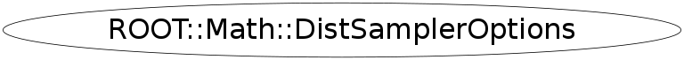

Function Members (Methods)
public:
| ~DistSamplerOptions() | |
| const string& | Algorithm() const |
| static ROOT::Math::IOptions& | Default(const char* name) |
| static const string& | DefaultAlgorithm1D() |
| static const string& | DefaultAlgorithmND() |
| static int | DefaultPrintLevel() |
| static const string& | DefaultSampler() |
| ROOT::Math::DistSamplerOptions | DistSamplerOptions(int dim = 0) |
| ROOT::Math::DistSamplerOptions | DistSamplerOptions(const ROOT::Math::DistSamplerOptions& opt) |
| ROOT::Math::IOptions* | ExtraOptions() const |
| static ROOT::Math::IOptions* | FindDefault(const char* name) |
| ROOT::Math::DistSamplerOptions& | operator=(const ROOT::Math::DistSamplerOptions& opt) |
| void | Print(ostream& os = std::cout) const |
| static void | PrintDefault(const char* name = 0, ostream& os = std::cout) |
| int | PrintLevel() const |
| const string& | Sampler() const |
| void | SetAlgorithm(const char* type) |
| static void | SetDefaultAlgorithm1D(const char* algo) |
| static void | SetDefaultAlgorithmND(const char* algo) |
| static void | SetDefaultPrintLevel(int level) |
| static void | SetDefaultSampler(const char* type) |
| void | SetExtraOptions(const ROOT::Math::IOptions& opt) |
| void | SetPrintLevel(int level) |
| void | SetSampler(const char* type) |
Class Charts
{kind=link}
{kind=link}
{kind=link}
{kind=link}

Function documentation
void SetDefaultSampler(const char* type)
static methods for setting and retrieving the default options
void SetDefaultAlgorithm1D(const char* algo)
void SetDefaultAlgorithmND(const char* algo)
void SetDefaultPrintLevel(int level)
const std::string & DefaultSampler()
const std::string & DefaultAlgorithm1D()
const std::string & DefaultAlgorithmND()
int DefaultPrintLevel()
ROOT::Math::IOptions & Default(const char* name)
retrieve extra options - if not existing create a IOptions
void PrintDefault(const char* name = 0, ostream& os = std::cout)
print all the default options for the name given
DistSamplerOptions(int dim = 0)
constructor using the default options pass optionally a pointer to the additional options otherwise look if they exist for this default minimizer and in that case they are copied in the constructed instance constructor takes dimension since a different default algorithm is used if the dimension is 1 or greater than 1
IOptions * ExtraOptions() const
return extra options (NULL pointer if they are not present)
{ return fExtraOptions; }void SetPrintLevel(int level)
non-static methods for setting options set print level
{ fLevel = level; }void SetExtraOptions(const ROOT::Math::IOptions& opt)
set extra options (in this case pointer is cloned)